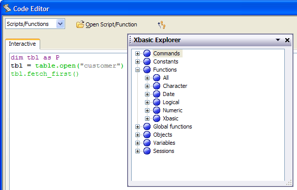

Xbasic Explorer
The Xbasic Explorer is an extremely useful tool when you are writing code in the Code Editor, or experimenting with code in the Interactive window. It is a complete reference of all of the commands, functions, methods, properties and constants in the Xbasic language. It also shows you all of the current objects that exist, all global variables that you have created, and all Global Functions that you have defined.
For example, if you have a form called Customer with two fields, Customer_Id and Customer_Name, the Xbasic Explorer will show you that the following objects exist in your Alpha Anywhere environment: "Customer" - the form itself, Customer_Id - the text field to enter data, "Customer_id_lbl" - the label for the text field, Customer_Name - the text field for the customer name, and "Customer_Name_lbl", the label for the text field. For each of these objects, the Explorer lists all of the methods and properties for the object.
To display the Xbasic Explorer, select View > Xbasic Explorer from the Code Editor's menu or select "Xbasic Explorer" from the drop down menu of the floating window.

Navigating in the Xbasic Explorer
The Xbasic Explorer works like a standard Windows tree control. You can click on the + sign next to an entry to expand that branch. Similarly, you can click on the - sign next to an entry to collapse a branch. Note that the Xbasic Explorer lists all:
Xbasic command statements
System constants
Functions and their syntax
Global functions (user defined)
System objects and their methods
Variables (user defined)
Sessions
Dragging Entries from the Xbasic Explorer
You can drag an entry from the Xbasic Explorer and drop it into the Code Editor or Interactive window. Alpha Anywhere will insert the appropriate entry at the insertion point.
How to Determine if a Table is Not Closed Properly
Open the Interactive Editor from the Control Panel.
Click View > Xbasic Explorer to open the Xbasic Explorer. You should see 2 sessions at the bottom of the list.
Open the window in question, then close it. Check the Xbasic Explorer to see how many sessions are open. If you have three sessions open, then the window is not closing properly.
See Also
Comments and Commands, Compiling the Script, Password Protecting Your Scripts, The Code Editor